4.8. Image Classes#
4.8.1. Overview#
Name |
Description |
|---|---|
Image object containing three channel sRGB data as well as geometry information. |
|
Image object with only a single channel modeling a physical or physiological property. |
|
Raytracer created image that holds raw XYZ colorspace and power data.
This object allows for the creation of
RGBImage and LinearImage objects. |
4.8.2. Creation of LinearImage and RGBImage#
Both LinearImage and RGBImage require a data argument and a geometry argument.
The latter can be either provided as side length list s or a positional extent parameter.
s is a two element list describing the side lengths of the image.
The first element gives the length in x-direction, the second in y-direction.
The image is automatically centered at x=0 and y=0
Alternatively the edge positions are described using the extent parameter.
It defines the x- and y- position of the edges as four element list.
For instance, extent=[-1, 2, 3, 5] describes that the geometry of the image reaches from x=-1
to x=2 and y=3 to y=5.
The data argument must be a numpy array with either two dimensions (LinearImage) or three dimensions (RGBImage).
In both cases, the data should be non-negative and in the case of the RGBImage
lie inside the value range of [0, 1].
The following example creates a random LinearImage using a numpy array and the s argument:
import numpy as np
img_data = np.random.uniform(0, 6, (200, 200))
img = ot.LinearImage(img_data, s=[0.1, 0.08])
While a random, spatially offset RGBImage is created with:
import numpy as np
img_data = np.random.uniform(0, 1, (200, 200, 3))
img = ot.RGBImage(img_data, extent=[-0.2, 0.3, 0.08, 0.15])
It is also possible to load image files. For this, the data is specified as relative or absolute path string:
img = ot.RGBImage("image_file.png", extent=[-0.2, 0.3, 0.08, 0.15])
Load a LinearImage is also possible. However, in the case of a three channel image file, there can’t be any significant coloring. An exception gets thrown in that case. If this is the case, either remove color information or convert it to an achromatic color space.
RGBImage presets are available in Section 4.8.13.
For convolution there are multiple PSF LinearImage presets, see Section 4.11.6.
4.8.3. Rendering a RenderImage#
Example Geometry
The below snippet generates a geometry with multiple sources and detectors.
# make raytracer
RT = ot.Raytracer(outline=[-5, 5, -5, 5, -5, 60])
# add Raysources
RSS = ot.CircularSurface(r=1)
RS = ot.RaySource(RSS, divergence="None", spectrum=ot.presets.light_spectrum.FDC,
pos=[0, 0, 0], s=[0, 0, 1], polarization="y")
RT.add(RS)
RSS2 = ot.CircularSurface(r=1)
RS2 = ot.RaySource(RSS2, divergence="None", s=[0, 0, 1], spectrum=ot.presets.light_spectrum.d65,
pos=[0, 1, -3], polarization="Constant", pol_angle=25, power=2)
RT.add(RS2)
# add Lens 1
front = ot.ConicSurface(r=3, R=10, k=-0.444)
back = ot.ConicSurface(r=3, R=-10, k=-7.25)
nL1 = ot.RefractionIndex("Cauchy", coeff=[1.49, 0.00354, 0, 0])
L1 = ot.Lens(front, back, de=0.1, pos=[0, 0, 10], n=nL1)
RT.add(L1)
# add Detector 1
Det = ot.Detector(ot.RectangularSurface(dim=[2, 2]), pos=[0, 0, 0])
RT.add(Det)
# add Detector 2
Det2 = ot.Detector(ot.SphericalSurface(R=-1.1, r=1), pos=[0, 0, 40])
RT.add(Det2)
# trace the geometry
RT.trace(1000000)
Source Image
Rendering a source image is done with the source_image
method of the Raytracer class.
Note that the scene must be traced before.
Example:
simg = RT.source_image()
This renders an RenderImage for the first source.
The following code renders it for the second source (since index counting starts at zero) and additionally provides
the resolution limit limit parameter of 3 µm.
simg = RT.source_image(source_index=0, limit=3)
Detector Image
Calculating a detector_image is done in a similar fashion:
dimg = RT.detector_image()
Compared to source_image, you can not only provide a
detector_index, but also a source_index, which limits the rendering to the light from this source.
By default all sources are used for image generation.
dimg = RT.detector_image(detector_index=0, source_index=1)
For spherical surface detectors a projection_method can be chosen.
Moreover, the extent of the detector can be limited with the extent parameter, that is provided as
[x0, x1, y0, y1] with \(x_0 < x_1, ~ y_0 < y_1\).
By default, the extent gets adjusted automatically to contain all rays hitting the detector.
The limit parameter can also be provided,
as for source_image.
dimg = RT.detector_image(detector_index=0, source_index=1, extent=[0, 1, 0, 1], limit=3,
projection_method="Orthographic")
4.8.4. Iterative Render#
When tracing, the amount of rays is limited by the system’s available RAM. Many million rays would not fit in the finite working memory.
The function iterative_render exists
to allow the usage of even more rays.
It does multiple traces and iteratively adds up the image components to a summed image.
In this way there is no upper bound on the ray count.
With enough available user time, images can be rendered with many billion rays.
Parameter N provides the overall number of rays for raytracing.
The returned value of iterative_render
is a list of rendered detector images.
If the detector position parameter pos is not provided,
a single detector image is rendered at the position of the detector specified by detector_index.
rimg_list = RT.iterative_render(N=1000000, detector_index=1)
If pos is provided as coordinate, the detector is moved before tracing.
rimg_list = RT.iterative_render(N=10000, pos=[0, 1, 0], detector_index=1)
If pos is a list, len(pos) detector images are rendered.
All other parameters are either automatically repeated len(pos) times or can be specified
as list with the same length as pos.
Exemplary calls:
rimg_list = RT.iterative_render(N=10000, pos=[[0, 1, 0], [2, 2, 10]], detector_index=1)
rimg_list = RT.iterative_render(N=10000, pos=[[0, 1, 0], [2, 2, 10]], detector_index=[0, 0],
limit=[None, 2], extent=[None, [-2, 2, -2, 2]])
Tips for Faster Rendering
With large rendering times, even small speed-up amounts add up significantly:
Setting the raytracer option
RT.no_polskips the calculation of the light polarization. Note that depending on the geometry the polarization direction can have an influence of the amount of light transmission at different surfaces. It is advised to experiment beforehand, if the parameter seems to have any effect on the image. Depending on the geometry,no_pol=Truecan lead to a speed-up of 10-30%.Prefer inbuilt surface types to data or function surfaces
- try to limit the light through the geometry to rays hitting all lenses. For instance:
Moving the color filters to the front of the system avoids the calculation of ray refractions that get absorbed at a later stage.
Orienting the ray direction cone of the source towards the setup, therefore maximizing rays hitting all lenses. See the Arizona Eye Model example on how this could be done.
4.8.5. Saving and Loading a RenderImage#
Saving
A RenderImage can be saved on the disk for later use in optrace.
This is done with the following command, that takes a file path as argument:
dimg.save("RImage_12345")
The file ending should be .npz, but gets added automatically otherwise.
This function overrides files and throws an exception when saving failed.
Loading
The static method load
from the RenderImage loads the saved file.
It requires a path and returns the RenderImage object arguments.
dimg = ot.RenderImage.load("RImage_12345")
4.8.6. Sphere Projections#
With a spherical detector surface, there are multiple ways to project it down to a rectangular surface. Note that there is no possibility to correctly represents angles, distances and areas at the same time.
Below you can find the projection methods implemented in optrace and links to a more detailed explanation. Details on the math applied are found in the math section in Section 5.3.2.
The available methods are:
|
Perspective projection, sphere surface seen from far away [1] |
|---|---|
|
Conformal projection (preserving local angles and shapes) [2] |
|
Projection keeping the radial direction from a center point equal [3] |
|
Area preserving projection [4] |

|

|

|

|
4.8.7. Resolution Limit Filter#
Unfortunately, optrace does not take wave optics into account when simulating.
To estimate the effect of a resolution limit the RenderImage
class provides a limit parameter.
For a given limit value a corresponding Airy disc is created, that is convolved with the image.
This parameter describes the Rayleigh limit, being half the size of the Airy disc core (zeroth order),
known from the equation:
Where \(\lambda\) is the wavelength and \(\text{NA}\) is the numerical aperture. While the limit is wavelength dependent, one fixed value is applied to all wavelengths for simplicity. Only the first two diffraction orders (core + 2 rings) are used, higher orders should have a negligible effect.
Note
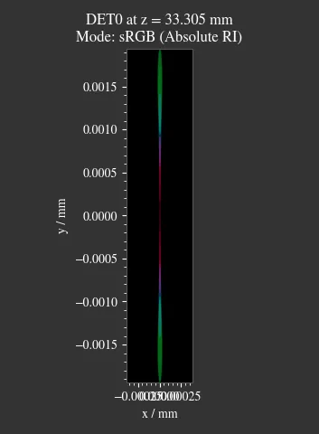 |
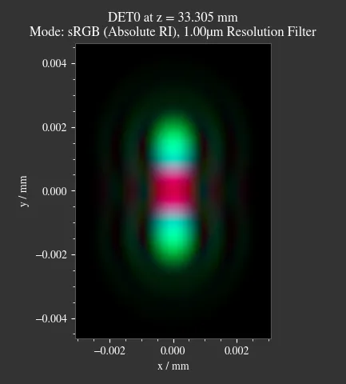 |
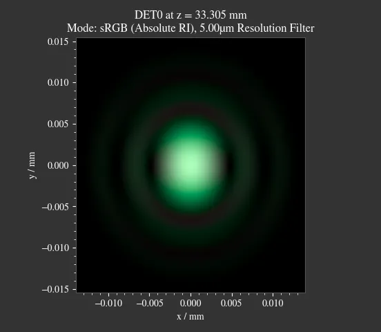 |
{kind=link}
{kind=link}
{kind=link}
The limit parameter can be applied while either creating the RenderImage (ot.RenderImage(..., limit=5))
or by providing it to methods the create an RenderImage (Raytracer.detector_image(..., limit=1),
Raytracer.iterative_render(..., limit=2.5).
4.8.8. Generating Images from RenderImage#
Usage
From a RenderImage multiple image modes can be generated with the
get method.
The function takes an optional pixel size parameter, that determines the pixel count for the smaller image size.
Internally the RenderImage stores its data with a
pixel count of 945 for the smaller side, while the larger side is either 1, 3 or 5 times this size,
depending on the side length ratio. Therefore no interpolation takes place that would falsify the results.
To only join full bins, the available sizes are reduced to:
>>> ot.RenderImage.SIZES
[1, 3, 5, 7, 9, 15, 21, 27, 35, 45, 63, 105, 135, 189, 315, 945]
As can be seen, all sizes are integer factors of 945. All sizes are odd, so there is always a pixel/line/row for the image center. Without a center pixel/line/row the center position would be badly defined, either being offset or jumping around depending on numerical errors.
In the function get the nearest value from
RenderImage.SIZES to the user selected value is chosen.
Let us assume the dimg has a side length of s=[1, 2.63],
so it was rendered in a resolution of 945x2835. This is the case because the nearest side factor to 2.63 is 3 and
because 945 is the size for all internally rendered images.
From this resolution the image can be scaled to 315x945 189x567 135x405 105x315 63x189 45x135 35x105 27x81 21x63 15x45
9x27 7x21 5x15 3x9 1x3.
The user image is then scaled into size 315x945, as it is the nearest to a size of 500.
These restricted pixel sizes lead to typically non-square pixels. But these are handled correctly by plotting and processing functions. They will only become relevant when exporting the image to an image file, where the pixels must be square. More details are available in section Section 4.8.10.
To get a Illuminance image with 315 pixels we can write:
img = dimg.get("Illuminance", 500)
Only for image modes "sRGB (Perceptual RI)" and "sRGB (Absolute RI)" the returned object type
is RGBImage .
For all other modes it is of type LinearImage.
For mode "sRGB (Perceptual RI)" there are two optional additional parameters L_th
and chroma_scale. See Section 4.15.5 for more details.
Image Modes
|
Image of power per area |
|---|---|
|
Image of luminous power per area |
|
A human vision approximation of the image. Colors outside the gamut are chroma-clipped. Preferred sRGB-Mode for “natural”/”everyday” scenes. |
|
Similar to sRGB (Absolute RI), but with uniform chroma-scaling. Preferred mode for scenes with monochromatic sources or highly dispersive optics. |
|
Pixels outside the sRGB gamut are shown in white |
|
Human vision approximation in greyscale colors. Similar to Illuminance, but with non-linear brightness function. |
|
Hue image from the CIELUV colorspace |
|
Chroma image from the CIELUV colorspace. Depicts how colorful an area seems compared to a similar illuminated grey area. |
|
Saturation image from the CIELUV colorspace. How colorful an area seems compared to its brightness. Quotient of Chroma and Lightness. |
The difference between chroma and saturation is more thoroughly explained in [5]. An example for the difference of both sRGB modes is seen in Table 5.5.

Fig. 4.31 sRGB Absolute RI# |
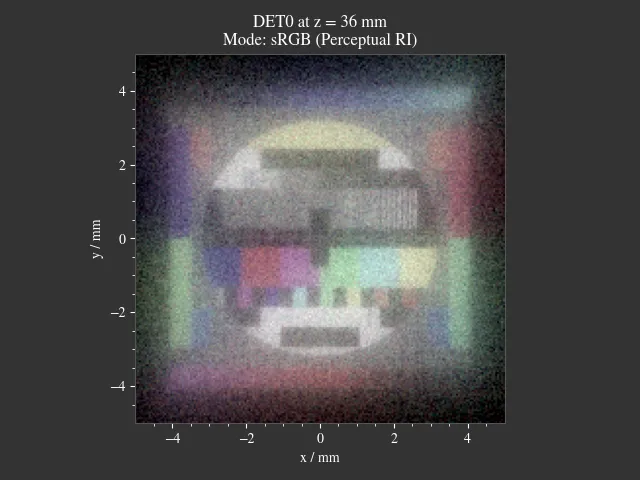 Fig. 4.32 sRGB Perceptual RI# |
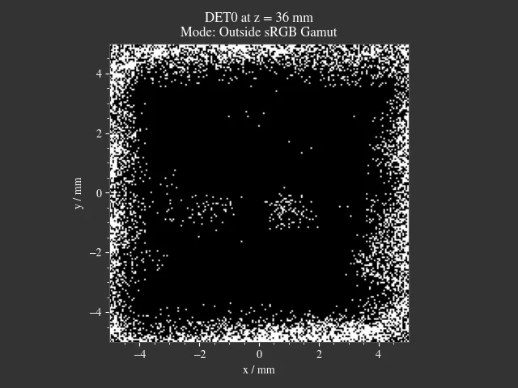 Fig. 4.33 Values outside of sRGB# |
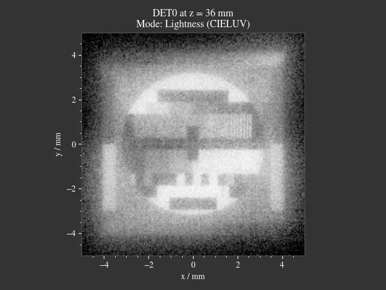 Fig. 4.34 Lightness (CIELUV)# |
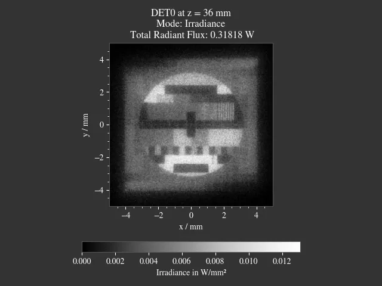 Fig. 4.35 Irradiance# |
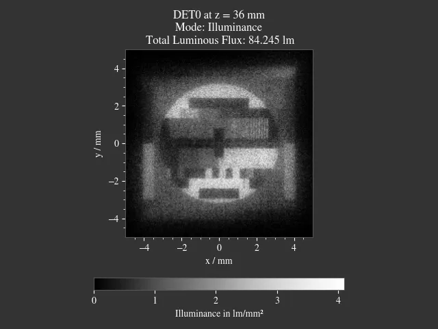 Fig. 4.36 Illuminance# |
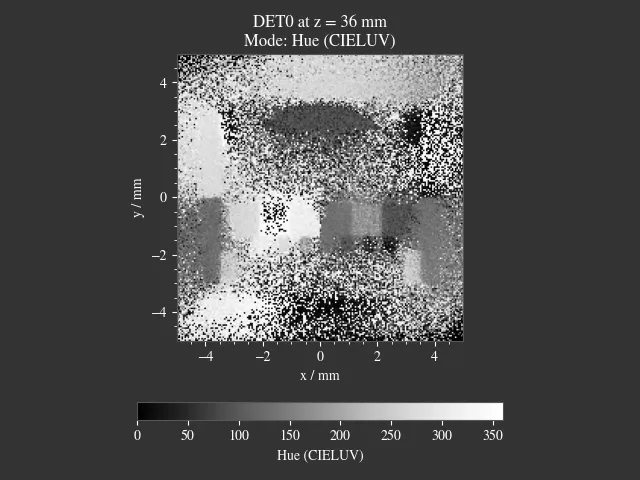 Fig. 4.37 Hue (CIELUV)# |
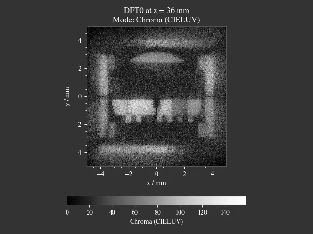 Fig. 4.38 Chroma (CIELUV)# |
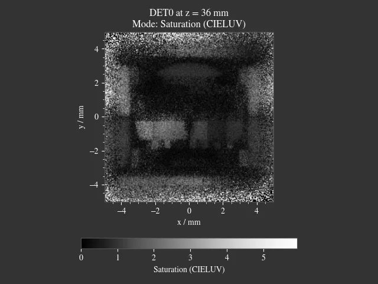 Fig. 4.39 Saturation (CIELUV)# |
{kind=link}
{kind=link}
{kind=link}
{kind=link}
{kind=link}
{kind=link}
{kind=link}
{kind=link}
4.8.9. Image Profile#
An image profile is a line profile of a generated image in x- or y-direction.
It is created by the profile() method.
The parameters x and y define the positional value for the profile.
The following example generates an image profile in y-direction at x=0:
bins, vals = img.profile(x=0)
For a profile in x-direction we can write:
bins, vals = img.profile(y=0.25)
The function returns a tuple of the histogram bin edges and the histogram values, both one dimensional numpy arrays. Note that the bin array is larger by one element.
4.8.10. Saving Images#
LinearImage and RGBImage can be saved to disk in the following way:
img.save("image_render_srgb.jpg")
The file type is automatically determined from the file ending in the path string.
Often times the image is flipped, but it can be flipped using flip=True.
This rotates the image by 180 degrees.
img.save("image_render_srgb.jpg", flip=True)
Depending on the file type ,there can be additional saving parameters provided, for instance compression settings:
import cv2
img.save("image_render_srgb.jpg", params=[cv2.IMWRITE_PNG_COMPRESSION, 1], flip=True)
See
cv2.ImwriteFlags
for more information.
The image is automatically interpolated so the exported image has the same side length ratio
as the RGBImage or LinearImage object.
Note
While the Image has arbitrary, generally non-square pixels, for the export the image is rescaled to have square pixels. However, in many cases there is no exact ratio that matches the side ratio with integer pixel counts. For instance, an image with sides 12.532 x 3.159 mm and a desired export size of 105 pixels for the smaller side leads to an image of 417 x 105 pixels. This matches the ratio approximately, but is still off by -0.46 pixels (around -13.7 µm). This error gets larger the smaller the resolution is.
4.8.11. Plotting Images#
See Plotting Images.
4.8.12. Image Properties#
Overview
Classes LinearImage, RenderImage, RGBImage share property methods.
These include geometry information and metadata.
When a LinearImage or RGBImage is created from a RenderImage, the metadata and geometry
is automatically propagated into the new object.
Size Properties
>>> dimg.extent
array([-0.0081, 1.0081, -0.0081, 1.0081])
>>> dimg.s[1]
1.0162
The data shape:
>>> dimg.shape
(945, 945, 4)
Apx is the area per pixel in mm²:
>>> dimg.Apx
1.1563645362671817e-06
Metadata
>>> dimg.limit
3.0
>>> dimg.projection is None
True
Data Access
Access the underlying array data using:
dimg.data
Image Powers (RenderImage only)
Power in W and luminous power in lm:
dimg.power()
dimg.luminous_power()
Image Mode (RGBImage/LinearImage only)
>>> img.quantity
'Illuminance'
4.8.13. Image Presets#
Below you can find preset images that can be used as ray source.
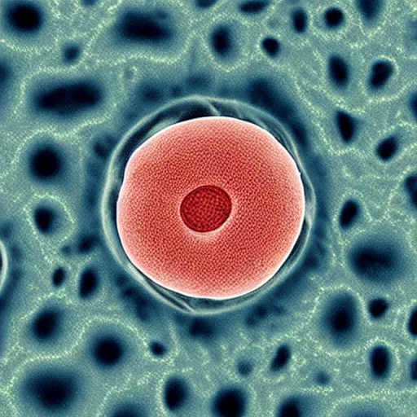 Fig. 4.40 Cell image for microscope examples
(Source).
Usable as |
Fig. 4.41 Photo of different fruits on a tray
(Source).
Usable as |
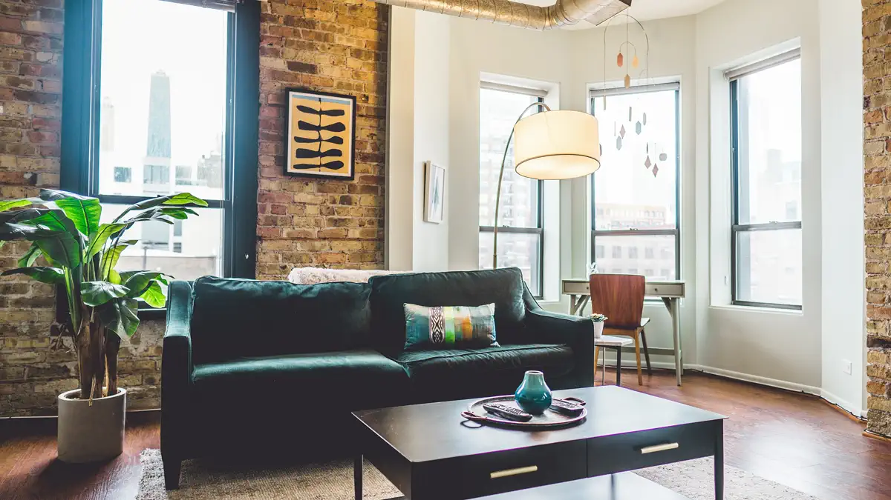 Fig. 4.42 Green sofa in an interior room (Source).
Usable as |
Fig. 4.43 Landscape image of a mountain and water scene
(Source).
Usable as |
Fig. 4.44 Photo of a keyboard and documents on a desk
(Source).
Usable as |
Fig. 4.45 Photo of a group of people in front of a blackboard
(Source).
Usable as |
Fig. 4.46 Photo of a Hong Kong street at night
(Source).
Usable as |
{kind=link}
{kind=link}
{kind=link}
{kind=link}
{kind=link}
{kind=link}
{kind=link}
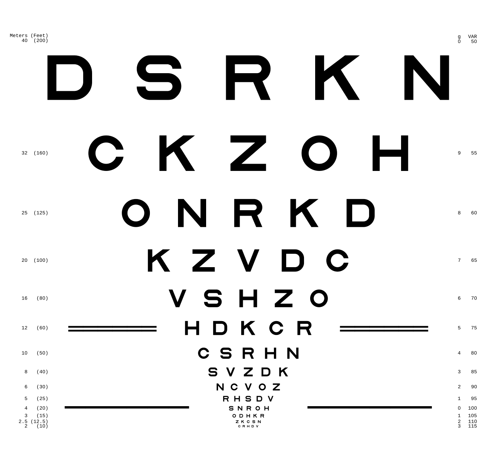 Fig. 4.47 ETDRS Chart standard (Source).
Usage with |

Fig. 4.48 ETDRS Chart standard. Edited version of the ETDRS image.
Usage with |

Fig. 4.49 TV test card #1 (Source).
Usage with |
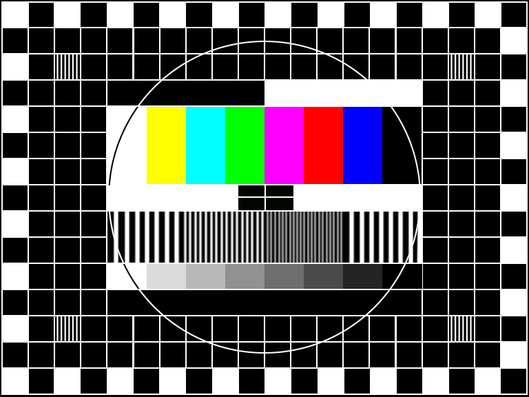 Fig. 4.50 TV test card #2 (Source).
Usage with |
Fig. 4.51 Color checker chart
(Source).
Usage with |
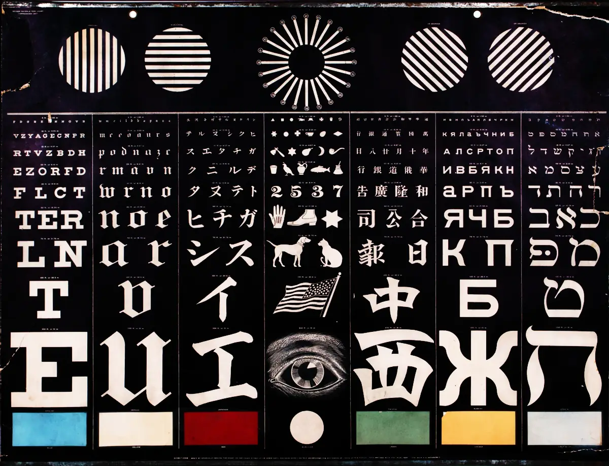 Fig. 4.52 Photo of a vintage eye test chart.
Image Source
Usage with |
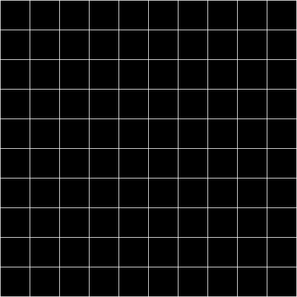 Fig. 4.53 White grid on black background with 10x10 cells. Useful for distortion characterization.
Usage with |
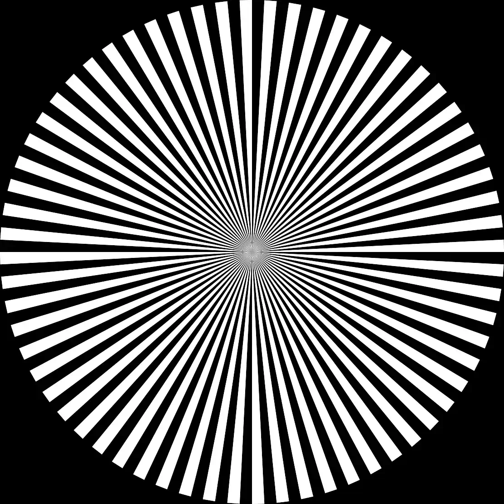 Fig. 4.54 Siemens star image.
Own creation.
Usage with |
{kind=link}
{kind=link}
{kind=link}
{kind=link}
{kind=link}
{kind=link}
{kind=link}
{kind=link}
{kind=link}
{kind=link}
References